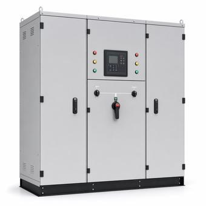

ATS, STS and Static Bypass: Three Different Transfers
Three devices that all move a load from one source to another, separated by two things people conflate: how fast the transfer happens, and whether the device is a standalone piece of equipment or a part of the UPS it lives in.

Key takeaways
- An ATS is mechanical and transfers in seconds. It exists to bring a generator onto the load after utility failure.
- An STS is solid-state and transfers in a fraction of a cycle. It exists to feed a single-corded load from two independent UPS sources.
- A static bypass is not a standalone device. It is the path inside a UPS that carries the load when the inverter cannot.
- Transfer time only means something relative to what the load tolerates, which is why an ATS is fine behind a UPS and not in front of a bare server.
On this page · 7 sections
Three devices, three jobs
All three move a load from one source to another, which is why the terms get used loosely. They are not interchangeable and they do not sit in the same place.
An automatic transfer switch switches between two power sources, classically utility and generator. It is a mechanical device: contacts move, and the transfer takes a noticeable fraction of a second to several seconds, dominated by the time the generator needs to start and reach speed.
A static transfer switch switches between two AC sources using thyristors rather than moving contacts, which lets it transfer within a fraction of a cycle — a handful of milliseconds. It is used to give a single-corded load the benefit of two independent upstream paths.
A static bypass is the one that is not a standalone product at all. It is a path built into a UPS, from the UPS input to the UPS output, bypassing the inverter. It transfers the load onto raw input power when the inverter cannot support it, and it is part of the UPS rather than a device you place in a one-line.
What transfer time actually means
Quoting transfer times without reference to the load is how these devices get misapplied.
An IT power supply holds through a short interruption on its own internal energy storage — conventionally expected to ride through on the order of half a cycle. A transfer completed faster than that is invisible to the load. A transfer taking seconds is a power outage as far as the load is concerned, regardless of how reliably it happened.
So the mechanical speed of an ATS is not a deficiency; it is appropriate to its job. Behind a UPS, where the UPS carries the load on its batteries during the generator start, seconds are entirely acceptable, and that arrangement is the normal one. In front of an unprotected load, the same device produces a dropout.
An STS is fast enough to be transparent, which is exactly why it is used where there is no UPS between it and a sensitive load — or where the two sources it selects between are themselves UPS outputs.
Open and closed transition
An ATS can be specified to break before it makes, or to make before it breaks, and the choice has consequences beyond the switch.
Open transition disconnects one source before connecting the other. There is a brief dead interval, the two sources are never paralleled, and the switch is simpler. This is the default and it is correct for most installations.
Closed transition briefly parallels the two sources so the load sees no interruption at all. That requires the sources to be synchronised in voltage, frequency and phase angle before the transfer, which means synchronising controls and a generator capable of it. It also requires the utility’s agreement, because for a moment the generator is connected in parallel with the grid, and that brings the whole interconnection question into a transfer scheme.
Where closed transition earns its cost is returning to utility after a test or an outage, which is a planned event that need not disturb the load at all. The forward transfer on an actual utility failure is open by necessity — there is nothing to synchronise to.
The STS and single-corded loads
An STS exists for one problem: equipment with a single power cord in a facility with two power paths.
A dual-corded server simply takes a feed from each path and its own power supplies handle the rest; no transfer device is needed, which is why dual-corded equipment is preferred wherever it is available. But plenty of equipment has one cord — network gear, storage controllers, older plant, anything with a single supply — and connecting it to one path makes that path a single point of failure for it.
An STS sits between the two paths and presents one output. It normally draws from a preferred source and transfers to the alternate within milliseconds if the preferred one degrades. The load never notices.
The caveat worth stating is that the STS then becomes the single point of failure it was installed to eliminate. It is one device with one output, and that is why facilities with many single-corded loads typically distribute them across several STS units rather than consolidating, and why the STS itself is a maintainability consideration rather than a solved problem.
The static bypass and its trap
The static bypass carries the load when the UPS inverter cannot: an inverter fault, a severe overload, an over-temperature condition, or a commanded transfer for maintenance. It operates fast enough that the load stays up.
The trap is what the load is connected to afterwards. On static bypass, the load is fed from raw UPS input power. It is no longer conditioned, and crucially it is no longer protected by the battery. A facility running on static bypass is a facility with no UPS, and an input disturbance at that moment reaches the load directly.
That matters because static bypass is not a rare event. It is the normal state during UPS maintenance, and on a single-module system it is the only way to work on the UPS without dropping the load. Treating that window as protected time is the mistake, and it is why the maintenance procedure for a single-module UPS usually involves arranging an alternative source rather than relying on bypass alone.
A static bypass should also not be confused with a maintenance bypass, which is a mechanical arrangement — typically a wrap-around breaker or switch — allowing the UPS to be fully isolated and worked on while the load runs on utility. The static bypass is electronic, automatic and internal; the maintenance bypass is manual and allows the unit to be de-energised entirely.
Common mistakes
Using the terms interchangeably on a one-line, so a reviewer cannot tell what was intended. Putting an ATS in front of an unprotected IT load and expecting a transparent transfer. Specifying closed transition without the synchronising controls or the utility agreement it requires. Treating an STS as removing a single point of failure when it introduces itself as one. Running on static bypass and assuming the load is still protected, when the battery is out of the path. Confusing static bypass with maintenance bypass, which is a different arrangement with a different purpose. Quoting transfer times without reference to what the load actually rides through.
Frequently asked questions
What is the difference between an ATS and an STS?
An ATS is mechanical and switches between two power sources, classically utility and generator, taking a noticeable fraction of a second to several seconds. An STS is solid-state and transfers within a fraction of a cycle, a handful of milliseconds. The ATS is appropriate where a UPS carries the load during the transfer; the STS is used where the load itself must not see an interruption.
Is a static bypass the same as a static transfer switch?
No. A static transfer switch is a standalone device selecting between two external sources. A static bypass is a path built into a UPS, from its input to its output around the inverter, that carries the load when the inverter cannot. One appears on a one-line as equipment; the other is a feature of the UPS.
Is the load still protected on static bypass?
No. On static bypass the load is fed from raw UPS input power, unconditioned and with the battery out of the path, so an input disturbance reaches the load directly. This matters because static bypass is the normal state during UPS maintenance, which is why working on a single-module UPS usually means arranging an alternative source rather than relying on bypass.
What is closed transition transfer?
An ATS arrangement that briefly parallels both sources so the load sees no interruption, as opposed to open transition which breaks before it makes. It requires the sources to be synchronised in voltage, frequency and phase, so it needs synchronising controls and the utility’s agreement to the momentary parallel. It is most useful returning to utility after a test, since the forward transfer on an actual failure has nothing to synchronise to.
Next steps
The UPS itself and its modes are covered in UPS topologies, and the redundancy arrangement these devices serve in N+1 vs. 2N.
Run the numbers
- Generator Runtime CalculatorFuel and runtime behind the generator an ATS starts.
- kVA to kW ConverterThe load figure a generator is sized against.
Cite or link to this guide
Free to quote with attribution. Suggested citation: Voltfield Editorial Team, “ATS, STS and Static Bypass: Three Different Transfers” Voltfield, updated September 29, 2026. https://voltfield.org/guide-grid-forming-vs-grid-following.html
Get new guides by email
One short email when a new guide or calculator is published, at most once a month. Your address is used for nothing else.